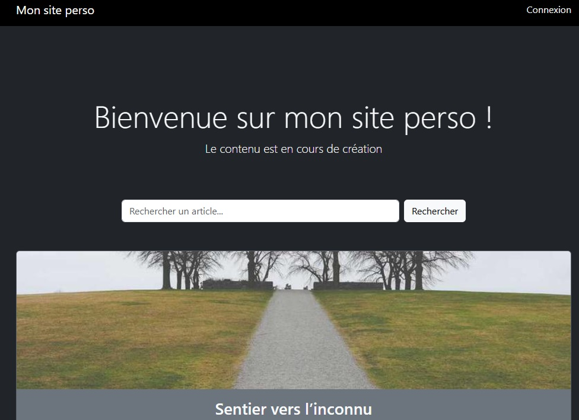

Challenge #51
Le blog du Dev Junior
Un développeur débutant a mis en ligne son premier blog personnel. Enthousiaste mais peu expérimenté, il a codé rapidement… et la sécurité n’était clairement pas sa priorité. Explore les pages, interagis avec les fonctionnalités, et tente de découvrir les failles laissées derrière lui. Plusieurs vulnérabilités classiques… Saura-tu toutes les trouver ?
Aperçu:
Pour cela vous devez avoir les connaissances suivantes :
- Injection SQL
- Exposition de fonctionnalités
- Information Disclosure (Divulgation d'informations)
 WSTG-INFO-05: Review Web Page Content for Information Leakage
WSTG-INFO-05: Review Web Page Content for Information Leakage